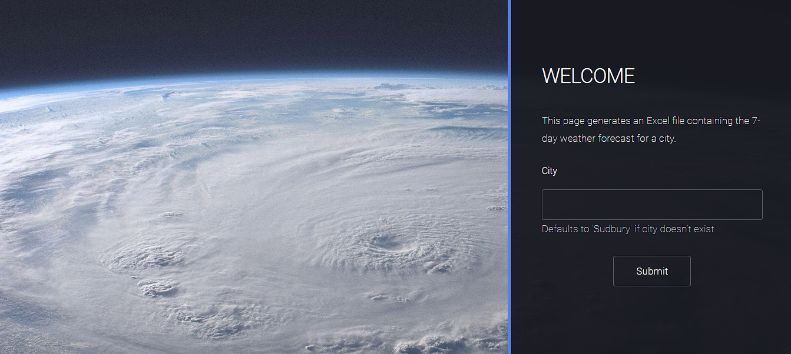
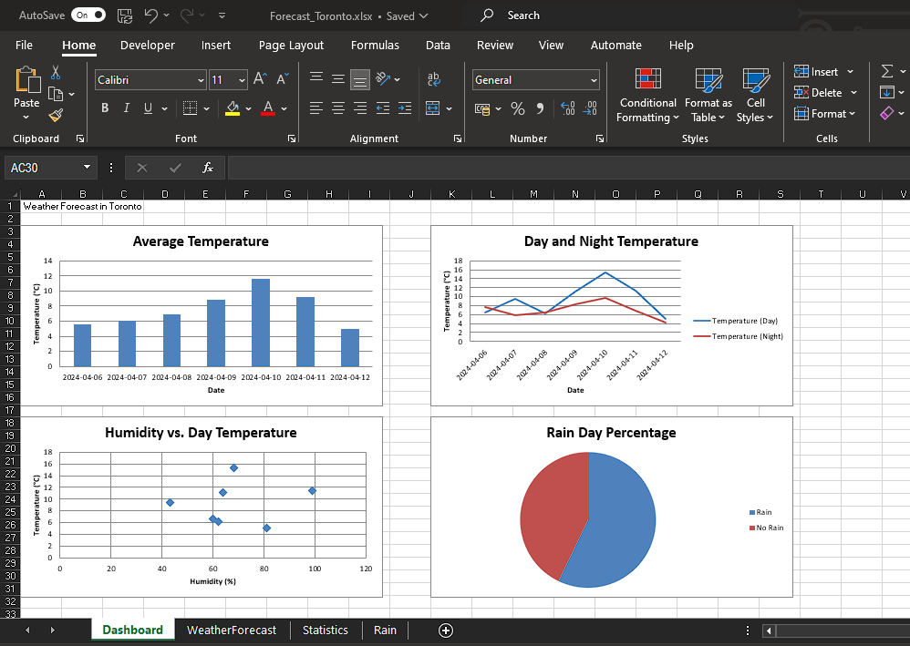
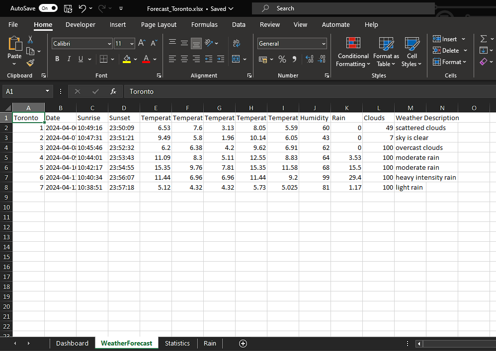
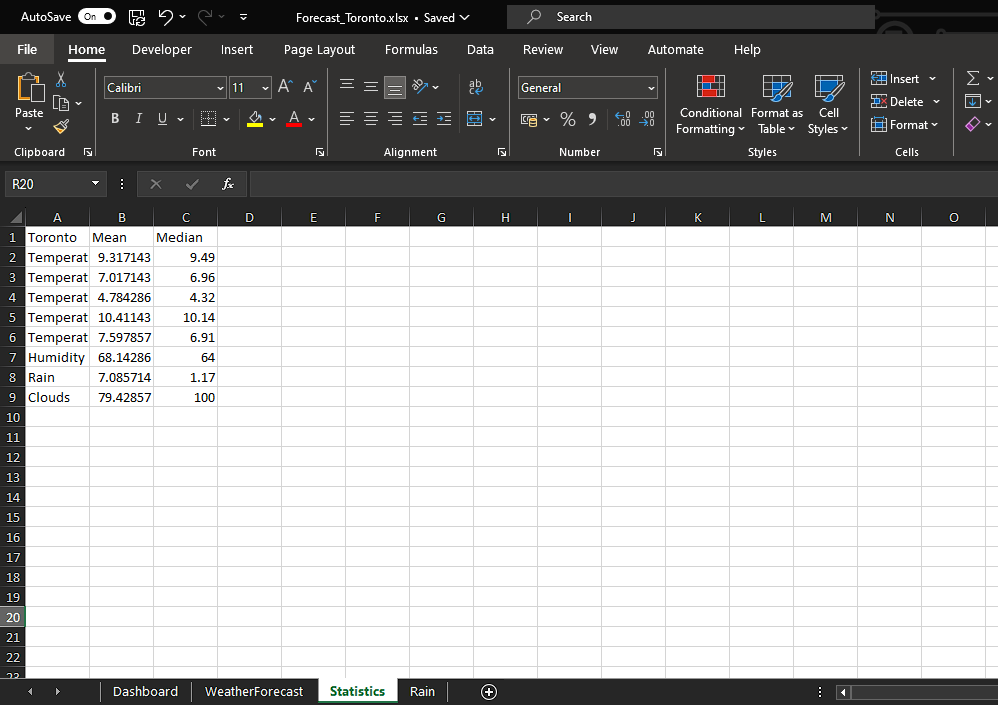
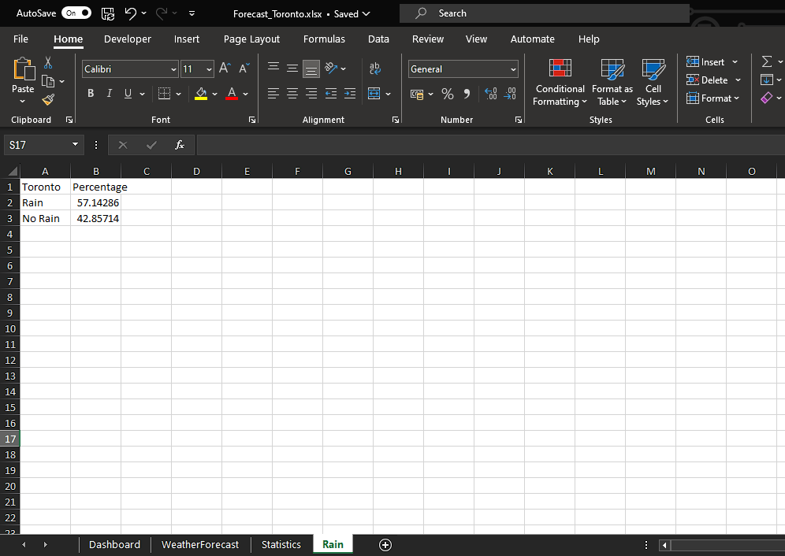

Create Excel File of Weather Forecast
With Python - Flask Framework
This webpage, built with Python and Flask, lets users easily access weather forecasts for any city. By tapping into the OpenWeatherAPI, it compiles a 7-day forecast into an Excel file for download. Additionally, the Excel workbook includes a dashboard feature, enabling users to analyze the data conveniently.It showcases my skills in web development, Python programming, and data integration, providing a practical tool for weather information.
Web Page
The program includes three HTML pages:
- Home page: users can input the desired city (defaulting to Sudbury if invalid)
- Success page: indicates that the Excel file has been created and is ready for download
- Error page: displays any encountered errors to the user.

Workbook
The workbook comprises four sheets:
- Dashboard: displays all charts.
- WeatherForecast: contains the raw data from OpenWeather
- Statistics: calculates the mean and median of selected columns
- Rain: computes the percentage of rainy days for display in a pie chart



